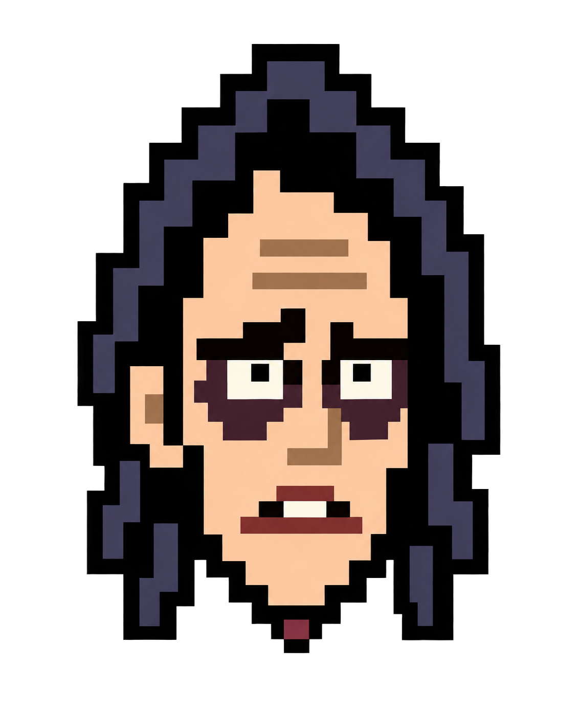
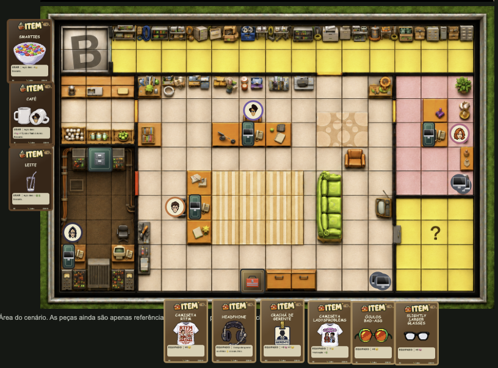
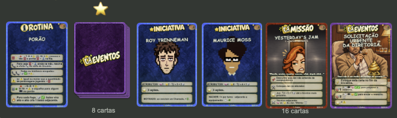
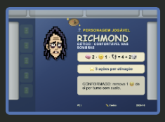

How to be a good IT technician at Reynholm Industries
Do not let Stress get too high! If that happens, the IT team will be fired and the basement will get a more useful purpose: a big toilet.
Start at the desk
1. Identify the base game
The Basement board is the standard setting. Missions may reserve rooms or specific positions when needed.
Clear a large table and place the Basement board in the center. Leave room below it for the initiative queue and character sheets.
Use the board with the elevator marked B. This is the base game's setting.
Place The Boss Stress ruler on the left and put the arrow on 0.
Check the 📍B marker. It appears in the upper-right corner of cards and identifies base-game components.
Choose any desk with a chair. This includes the manager's office on the right; a mission may reserve or restrict that space when needed.
Golden rule: if a mission includes its own setup, the mission instruction takes priority over this setup.
2. Choose the characters
Choose 1 to 4 playable characters. Each player chooses any office with a chair on the map.
Roy🧠3 · 🙂2 · 👣 = 4 + 2🎲
Moss🧠4 · 🙂0 · 👣 = 5 + 1🎲
Jen🧠0 · 🙂3 · 👣 = 4 + 1🎲

Richmond🧠2 · 🙂1 · 👣 = 5 + 2🎲
Place each character sheet and pawn in the players' area.
Place the pawn on the chair chosen as its office. This only defines the character's starting position; it does not restrict which computer or phone they can use.
Place a functional computer tile in the chosen office. It only marks the starting position; any character may use any computer.
Set aside one phone per playable character. Free phones stay off the board; place a phone tile on a desk only when the line is ringing or in use.
Tabletop pieces
Standard setup example

Standard playtest setup: the board is in the center, available items are grouped beside it, and character sheets stay below. Players still choose their own chairs; the screenshot is only a visual reference for organizing the table.
3. Set up the scenario
Use the functional side of the tiles. Keep markers that are not immediately needed in a shared supply within everyone's reach.
🖥️ComputersPlace 1 functional computer in each character's office.
🗄️ServerPlace the server on its functional side in the server room.
🧰Supply cabinetPlace the available cabinet tile along the bottom edge of the map.
☕KitchenStack the consumable cards face up near the kitchen.
🔋 💬MarkersKeep Fatigue, Morale and Distraction in a common supply.
🔥Fire and monitorsKeep fire tokens and broken monitors separate; missions may place them on the board.
Phones: use exactly 1 phone line per playable character to limit the pressure. A free-phone tile does not stay on the table.
What stays off the board at the start
Free-phone tiles, firefighters and special characters do not enter the map by default. Tickets and Users are represented by the ☎️ + 👤 cards; special characters enter only when a mission or card instructs you to place them.
4. Build the decks
Check the 📍B marker and prepare the base-game decks:
Ticketsshuffle
Usersshuffle
Eventsshuffle
Missionskeep order
🏆 Collectiblesshuffle
Tickets, Users and Events: shuffle each deck separately.
Missions: if you choose a mission with multiple acts, keep the cards in numerical order with the first mission on top.
Collectibles 🏆: shuffle them and leave them face down, outside the normal draw area.
Reference cards: leave Routine, Actions, Morale and Reminders face up for reference.
Empty deck: whenever a draw deck runs out, gather that deck's discarded cards, shuffle them and form a new pile. Do not shuffle the Missions deck; it stays in the chosen order.
The queue decides the round
5. Build the initiative queue
Read the queue from left to right. It organizes when the Routine, Events, characters and Mission will be activated.
Routine→Events→Roy→Moss→Yesterday’s Jam · Act 1
⭐ The star sits above the current card. It reminds you which card is being resolved. After completing the activation, move the star to the next card in the queue.
The Events space represents the deck; the visible card is only a visual reference.
Place the Routine card first. The star starts above it.
Place the Events deck immediately after the Routine.
Place the initiative cards for the chosen characters in the order agreed by the players.
Place the Missions deck last. The first mission is revealed according to the game rules.
Leave room on the right for cards that enter the queue during the game.
End of the queue: when the ⭐ reaches the last card, move it back to the first card in the queue. The Routine is resolved again at the start of the new round.
Initial setup: the first activation gives players time to organize. Before resolving the pressure, make sure everyone knows their office, where the computers are and where the reference cards are kept.
6. Pre-game checklist
Basement board assembled
Ruler at ⚠️ 0
1 office chosen per player
Functional computers placed
Extra phones off the board
Tickets, Users and Events shuffled
Missions in order
Routine, Actions, Morale and Reminders available
Dice separated
Tokens within reach
The table is ready and the first Routine has been resolved. Continue the round by moving the star through the queue, and consult the relevant sections of this manual when an exception appears.
The first activation
7. Resolve the Routine
Quick reference: see the main symbols table on the last page of this manual.
The Routine card is resolved at the start of each round, before the star advances.
When the ⭐ reaches the Events space, reveal the top card if no event is currently exposed. Then read the card's symbols and perform the indicated effect.
☎️⚡ Ringing phones Roll 🔺 for each ringing phone: 1–6 has no effect; 7–8 increases ⚠️ and leaves the phone ringing; 9–10 increases ⚠️ and places the ☎️ + 👤 set at the end of the queue.
📞 Active calls For each ☎️ + 👤 set still in a player's hand, resolve the 📞 line on the User card.
⚠️ Accumulated pressure If ⚠️ is equal to or lower than the number of playable characters, add another ☎️⚡.
🗄️🦠 Infected server If the server is infected, roll 🔺: 6–8 increases ⚠️; 9–10 increases ⚠️ and spreads the virus to a 🖥️ chosen by the players.
🔥 Fires For each fire, roll 🎲 ✅ and apply the spread rule explained in the subsection below.
Firefighter initiative card.
Fire and firefighter rules
After resolving the other Routine effects, resolve the fire step. For each 🔥 token, roll 🎲 ✅. On a success, the fire spreads:
Low fire becomes high fire.
High fire creates 1 low fire on a free, traversable adjacent tile.
If there is no valid tile, no new fire is placed.
Fire does not block movement, but crossing it causes +. No one may end movement or an activation on fire. A Firefighter crosses fire without penalty, but also cannot end movement on it.
When a Firefighter extinguishes fire covered by a broken monitor, remove the monitor first to reveal the token. Extinguishing means removing the token, whether it is low or high fire.
Calling the Firefighters: the cost and test for calling the Firefighters are explained on the Actions card, in the “Consult the Actions card” section.
Routine complete? Move the ⭐ one position to the right. Resolve the card now under the star and repeat this movement after each activation.
Cards that change the round
8. Resolve an Event
E4 — Urgent Request from Management.
When ⭐ reaches the Events space, reveal the top card if no event is currently exposed. Then read the card's symbols and perform the indicated effect.
Resolve ⚡ first. On this card, it tells you to place the card at the end of the initiative queue. It is no longer resolved in the Events space and now occupies its own position in the queue.
Complete the objectives in order. First, a character spends 1⏱️ and makes 🖥️ 🧠 ✅✅ to prepare the report. Only then may another character spend 1⏱️ and make 🖥️ 🙂 ✅ to send it. (🖥️ 🧠 ✅✅ — on a non-infected computer, roll an Intelligence test and get 2 successes.)
When ⭐ reaches the Event card, resolve ⭐. In this example, increase ⚠️ (Stress) by 1. The card remains in the queue while its objectives have not been completed.
Look for the discard instruction. When the second objective is completed, 🗑️ tells you to remove E4 from the queue.

After the immediate effect, Event E4 appears at the end of the initiative queue.
Difficulty for Events, Tickets and Missions. The small symbol in the upper-left corner indicates the general difficulty: 🤓 Easy; 😐 Medium; 😖 Hard. Cards that offer any benefit also receive a small green +. User cards do not use a difficulty rating.
Another example: E16 — Marketing Kind of Busy. After resolving the ⚡ effect, keep the card on top of the Events deck. While it is exposed, do not reveal a new card. At each ⭐ activation, roll 🔺 (d10); on 1–5, discard E16. Until then, this remains the active Event.
Practical rule: reveal an Event only when the star reaches the Events space and no other card is active there. Do not reveal a new card while the current Event remains exposed. When the Event itself enters the queue, follow the order of the lines and objectives printed on it.
Now it is the team's turn
9. Activate a character
When ⭐ reaches a character's initiative card, resolve that character's activation. The card shows the attributes, number of actions and special ability. The character sheet tracks that character's physical state and items.
Character sheet: tracks attributes, Fatigue, Morale, inventory and equipment.Initiative: stays in the queue and shows when Moss activates, along with his attributes and ability.Pawn: shows where the character is on the board.

Empty sheet: the spaces are available for markers, inventory and equipment.Sheet in use: items fit into the corresponding spaces, and the call cards can stay near the character.
Read the attributes.🧠 is Intelligence, 🙂 is Charisma and 👣 is movement per action. The 👣 formula combines base movement with the successes from the indicated dice.
Check the actions. The line ⭐ 3 actions means the character may spend up to three ⏱️ during the activation, according to the costs on cards and in the rules.
Use the 🔋 spaces. They store Morale and hold up to 5 markers. Other markers, such as , stay on the sheet as they are received.
Fill the inventory. The spaces above the sheet are the inventory: each character can carry up to 3 items; Richmond can carry up to 4. An item in the inventory is only carried and does not produce its equipment effect.
Equip items. The two spaces on the sides of the sheet are equipment slots. Equipping or unequipping costs 1⏱️. An equipped item's effect is active; an item in the inventory does not produce its equipment effect.
Character abilities
Character
Ability
Roy
MOTIVATED: when he completes a Ticket, he receives +🔋.
Moss
HACKER: once per turn, while adjacent to equipment, he may spend ⏱️ to remove 🦠 without rolling.
Richmond
RESIGNED: once per turn, remove 1 from himself for free.
Jen
LEADERSHIP: Jen may give 🔋 to another character to use on a Ticket in hand. Whenever a Ticket is completed, Jen receives +🔋.
How to resolve checks and tests
The attribute symbol indicates which dice pool to use. For example, 🧠 ✅✅ asks for an Intelligence test with two successes; a character with 🧠3 rolls 3 dice. An attribute at 0 generates no dice and cannot produce successes, unless a card or equipment effect says otherwise.
🎲 Custom d6: 1 = ❌🔒 · 2–4 = ❌ · 5 = ✅ · 6 = ✅🔒. The lock blocks the result, whether it is a failure or a success.
Combined test:🧠 + 🙂 = ✅✅ means add the Intelligence and Charisma dice and count 2 total successes. Separate tests:🧠✅, 🙂✅ means getting 1 success from each attribute; a 🧠 success does not replace the success required from 🙂.
Roll the indicated attribute. Roll a number of 🎲 equal to the character's 🧠 or 🙂 value.
Count the ✅. Repeated symbols show how many successes are required. Successes can be accumulated during the same activation.
Reroll if you want. After rolling, spend ⏱️1 to choose any number of unlocked dice belonging to one character. Dice with 🔒 cannot be chosen.
Try again or reroll. Trying again pays the normal cost and starts a new test with the full pool and no previous successes. Rerolling costs only an additional ⏱️1 and keeps the activation's accumulated successes.
End the activation. If the test is not completed by the end of the activation, discard the partial progress. The next activation starts from zero unless a rule says otherwise.
In a confrontation such as 🧠 vs Jen's 🙂, each side rolls its own pool and the side with more successes wins—in this case, the character's 🧠 Intelligence versus Jen's 🙂 Charisma. When 🔺 appears, use the d10 (10-sided die) and read the indicated number range; it does not generate successes.
During the activation: choose an action, pay its indicated cost, resolve the test or effect, and only then move to the next action. When you finish or spend all actions, move ⭐ to the next card in the queue.
Consult the Actions card
Keep the Actions card open and within everyone's reach.
The Actions card summarizes what a character can do during an activation. Whenever an action has a cost, spend ⏱️1; effects that say “free” do not consume an action.
Move: spend 1⏱️ and use the character's 👣 value. Add 1 tile for each ✅ obtained on the movement dice. Movement is orthogonal; diagonals count only for adjacency, not movement.
Remove : spend ⏱️1 to remove one Fatigue from yourself or an adjacent ally.
Generate 🔋: once per turn, spend ⏱️1 to generate 1 Morale for yourself, up to the limit of 5.
Use a 🖥️: for any action requiring a functional computer, the character must be in the chair directly in front of the functional 🖥️ tile.
Disinfect: while next to equipment, spend ⏱️1 and make the indicated test: 🖥️ 🧠 ✅✅ for a computer or 🗄️ 🧠 ✅✅✅ for the server.
Call the Firefighters: while next to a functional 🖥️, spend ⏱️1 and make the combined test 🙂 + 🧠 = ✅✅. On a success, place both Firefighters in the elevator and the Firefighter initiative card at the end of the queue.
Answer or postpone: while next to a ringing phone, spend ⏱️1 to draw the Ticket and User. To postpone an active call, spend ⏱️1, remove the phone tile and place the set in the queue.
Use the card as a reference: if an action, cost or exception is printed on it, follow the card text. The complete movement, test and call rules are in this manual.
Consult the Morale card
The Morale card shows the available costs and effects.
Morale is the resource represented by 🔋. It stays in the character sheet's spaces and can be spent according to the Morale card. To pay a cost, remove the indicated number of markers from the sheet and return them to the common supply; then apply the effect.
1🔋: receive +1👣, +1🙂 or +1🧠 during an action, according to the chosen option.
1🔋: change the result of a 🔺 by 1.
2🔋: receive +⏱️.
2🔋: add +1🎲 to a roll.
Limit: each character can store up to 5🔋.
Interruption: Morale may be spent at any time, including during another player's turn or before an Event or Mission resolves. Use it when the situation calls for an immediate response.
Crossing the office
10. Move a character
Moving costs 1⏱️. For each movement action, use the 👣 value shown on the character's initiative card.
Example: Richmond has 👣 = 5 + 2🎲. Roll 2 dice and add 1 tile for each ✅ obtained; Richmond can move up to 7 tiles in total if he gets 2✅.
Count tiles. Each tile crossed is worth 1 movement. The path must follow connected tiles; walls and blocking furniture cannot be crossed.
Move orthogonally. Movement can only go up, down, left or right. Diagonal movement is not allowed.
Do not end occupied. A character cannot end movement on the same tile as another character, a blockage or fire.
Cross fire carefully. Passing through a tile with 🔥 causes +. A Firefighter ignores this penalty, but also cannot end movement on fire.
Adjacency is different from movement: two tiles are also adjacent when they touch diagonally, but characters are still not allowed to move diagonally.
Office resources
11. Get and use items
Items are available on the board to prepare characters before and during the game. Consumables and Equipment follow this simple sequence:
Get a Consumable from the Kitchen. Enter the Kitchen and spend 1⏱️ to choose an available card from the face-up stack. To consume it, follow the card: when it says Free action, do not spend another ⏱️; then remove the Consumable from the game.
☕ ITEM: these are Kitchen Consumables. Simply enter the Kitchen area and spend 1⏱️ to take an available card.
Buy Equipment from the Supply Cabinet. While next to the 🧰 SUP tile, spend 1⏱️ to choose an available card. The Equipment may be placed directly into an Equipped slot during that same ⏱️ or stored in the Inventory.
🧰SUP
🧰 SUP: to buy Equipment, be adjacent to the Supply Cabinet and spend 1⏱️. The cards below are examples of Equipment.
Separate Inventory and Equipped. The spaces above the sheet are the Inventory: up to 3 Items, or 4 for Richmond. The two side slots are for Equipment; their effects work only while the card is equipped.
Equip or unequip. Putting on or removing Equipment costs 1⏱️. In a single action, you may unequip one item and immediately equip another, as long as one item leaves and another replaces it. A character may have up to two Equipment cards equipped, respecting the limit of one Equipment of each type. You may equip a newly purchased item during the same ⏱️ used to buy it.
Store Collectibles 🏆. They do not take up Inventory space or need to be carried on the board: when you acquire one, leave it in the Collection beside the sheet. If the card says EQUIPPED, it uses a side slot; its Equipment effect must be activated normally, and it also costs 1⏱️ to equip.
Trade between characters. A technical character adjacent to another character may spend 1⏱️ to trade 1 Item with that character: each can give 1 Item during the same ⏱️. If the character who spent the ⏱️ receives Equipment, they may equip it without an additional cost. Diagonals count as adjacency.
Summary: Consumables come from the Kitchen; Equipment comes from the Supply Cabinet; Inventory is what the character carries; Equipped is what is active. 🏆 Collectibles are obtained in special situations.
From phone to desk
12. Answer a Ticket
When a phone is ringing, a character may answer the User and find out the problem. From that moment on, the Ticket and User stay linked until the call is finished.
Ticket: defines the problem, tests and how to complete the call.User: defines the effects while in a player's hand or in the queue.
IT phone lines: each player desk defined during setup, with a computer, also represents an active phone. When a call appears, place the ☎️⚡ tile near any active computer in the Basement; it is only a marker and does not determine where the call must be answered.
Important reminder: whenever an effect tries to place ☎️⚡ and all phones are occupied, do not place a new tile and increase ⚠️ by 1.
Choose a desk with a computer. The character must be at any player desk with a computer; they do not need to be next to the ☎️⚡ tile. Spend 1⏱️.
Set the line to In service. Move the tile to the chosen desk and flip it to the 📞 side. Draw 1 ☎️Ticket card and 1 👤User card. Keep them together.
Choose how to proceed. While the set is in hand, the responsible character cannot move.
Resolve it in hand using the Ticket's costs and tests. The User's 📞 line is resolved by the Routine while the set remains in hand.
Postpone if necessary. Spend 1⏱️, remove the phone tile and place ☎️ + 👤 at the end of the initiative queue, with the Ticket on top. The phone is turned off.
Take it for yourself. During your activation, spend 1⏱️ to move a set from the initiative queue or another player's hand into your own hand.
Complete the Ticket. Resolve the User's 🏁 line, then the Ticket's completion effect, if any. Remove the phone tile from the desk if it is still on the board, and discard both cards together.
Postponed call: it may remain in the queue or be recovered using the rules above. To learn how to continue resolving the set while it is in the queue, see Resolve a Ticket in the Queue.
The game's main objective
13. Resolve a Mission
Choose the Mission before setup. It is the game's “level”: it defines the setup, required floors and objective. The main campaign uses Missions with acts; for a quick game, choose a 🎯 Mini mission.
There are two formats: a 🎯 Mini mission has a single card and a direct objective; a Mission with acts tells a story in stages, with one card for each act to be resolved in sequence.
Mission with actsYesterday’s Jam
1 — New manager 2 — Sinclair ZX81 3 — Want to connect to the Data Matrix?
🎯 Mini missionCrise
One card, one direct objective no act number
Example: Yesterday’s Jam — New Manager.
The Mission defines the story and special conditions of the game. It may change the setup, move special characters, create objectives and determine when the next Mission is revealed.
Reveal the first Mission. Mission cards stay in order when they belong to multiple acts. Start with the first card and keep the remaining cards face down.
Perform the setup. The line with 🛠️ explains the setup: read the setup lines and place characters, tiles, markers or cards exactly as the Mission says. This setup happens before you begin resolving the objectives.
Read the objective. The line with 🎯 explains what the players must achieve. The objective may require an action, a board condition or a sequence of stages.
Resolve ⭐ activations. When ⭐ reaches the Mission card in the queue, resolve its ⭐ lines. If it tells you to move an NPC or check a condition, do that at this moment.
Follow the acts in order. A Mission with multiple acts advances only when the current act's condition is completed. Do not skip to the next act; preserve the board states unless the Mission itself tells you to change them.
Discard and reveal the next card. When the 🗑️ condition is met, remove the active Mission from the queue and reveal the next Mission card in deck order.
Mission priority: if a Mission rule conflicts with a general rule, follow the Mission. The revealed card is the reference during the game; consult the manual only for details the card does not explain.
When the game ends
14. How the game ends
The game ends as soon as a victory or defeat condition is met. Always check the active Mission card before ending the game.
Why does Stress matter? If the pressure goes over the limit, the team will be fired and the new boss may turn the IT basement into something more useful — like one big toilet.
Mission victory. If the players complete the objective shown by the Mission, the team wins. In a Mission with acts, this happens when the final act's objective is completed.
Defeat by Stress. If ⚠️ The Boss Stress goes above 15, the players lose: IT is dismissed and the basement will be converted into one big toilet.
Mission exceptions. Some Missions may define a different victory, defeat or ending condition. When that happens, follow the Mission text; it takes priority over the general rule.
Before continuing: do not reveal a new Mission after the game has ended. Resolve only the condition that ended the game and determine the result.
Tip: Be creative and create your own Missions or combine more than one!
Pending in the initiative queue
15. Resolve a Ticket in the Queue
In the queue, the Ticket is placed over the User and ⭐ marks the set currently being activated.
A ☎️ + 👤 set in the queue represents a call that was postponed or entered directly through the Routine. It remains available for any character to resolve during their own turn.
The Ticket stays on top of the User. The two cards remain together as one call while they are in the queue. The User card identifies the queue effects; the Ticket card shows what must be resolved.
Resolve the User's ⭐ line. When ⭐ reaches the set in the queue, apply the effect shown on the User card beside ⭐.
Retrieve or take a Ticket. You may bring a set into a hand only when a phone is available. For 1⏱️, the current player may take the set into their own hand, either from the initiative queue or from another player's hand. Without doing this, any character may spend their actions to resolve the Ticket directly from the queue.
Follow the Ticket's steps. Read the objectives in the printed order, pay the costs, make the tests and accumulate successes only during the current activation.
If you do not complete it, keep the set in the queue. The Ticket remains available for the next activation, and the User's ⭐ line is applied again when the star returns to the set.
When completed: resolve the User's 🏁 line, then the Ticket's completion effect, if any, remove the phone tile from the desk if it is still on the board, and discard both cards together.
Flow summary: answer the phone → resolve in hand or postpone → leave the set in the queue → apply ⭐ → resolve the Ticket → apply 🏁 → discard the pair. For the first step, return to Answer a Ticket.
The main campaign
Yesterday’s Jam
A five-act story. The main campaign follows Jen's arrival in the IT department. While she tries to look prepared, the team must improvise, hide its problems and survive the chaos of the workday. Play the cards below in order; the manual contains the complete rules for each act.
F1 · New Manager
1 — New Manager
Denholm introduces Jen as the new manager. She arrives in the Basement talking about emails, mice and clicks as if she were revealing deep technical knowledge. Setup: Jen starts in the elevator, ready to meet the team. Objective: approach her with a technician and win the confrontation that reveals there is far more confidence than competence in that presentation.
F2 · Sinclair ZX81
2 — Sinclair ZX81
Jen is about to reach her chair and start taking charge of the department. When she walks past the Sinclair ZX81 without showing the slightest interest, the technicians start to suspect something — perhaps she really does not understand computers. Before that happens, they try to prepare a little surprise: infect the computer and leave behind a failure impossible to ignore. Setup: Jen continues moving toward the chair and the computer starts functional. Objective: infect the PC before she arrives; distractions can buy the necessary time.
F3 · Want to Connect to the Matrix?
3 — Want to Connect to the Matrix?
Now Jen tries to prove that she can handle things on her own. She interferes with the Tickets, improvises answers and turns every attempt into another opportunity for IT to look incompetent. Setup: Jen starts in her chair with Credibility 3. Objective: reduce that Credibility to 0 by facing the confrontations and preventing her attempts from increasing the company's Stress.
F4 · What a Realistic Screen Saver!
4 — What a Realistic Screen Saver!
Moss is repairing a circuit board with a soldering iron. He thinks the iron is on and switches it off — but it was already off. During the workday, the office catches fire. Roy notices the flames and sees Boss Denholm coming down to the Basement; he improvises by placing old monitors in front of the fire to make it look like nothing more than a screen saver. Setup: the fire appears in the lower cabinet, Denholm waits in the elevator and broken monitors are scattered through the offices. Objective: hide all the fires with monitors before Denholm enters the main room and notices the disaster.
F5 · Are You Stressed?
5 — Are You Stressed?
Denholm notices that Jen is in the middle of the chaos and starts pressuring her with questions. Setup: Jen stays in her chair, Denholm starts in front of the desk and the fires remain on the board. Objective: call the Firefighters by email, extinguish all fires and distract Denholm while Jen tries to survive the interrogation. If the fire is brought under control before Stress reaches the limit, the campaign ends with a team victory.
After the final act: apply the Mission's victory condition and end the game. For setup, activation and exception details, consult the earlier sections of this manual.
Optional setup
Achievements
Achievements are optional and do not change the Mission's victory or defeat. Check them only at the end of the game; they are a way to record the team's memorable feats.
General achievements
Another Friday finish: win with ⚠️ exactly at 15.
Everything under control: finish with no pending problems: no phones, fire or infected equipment.
That was too easy: finish with one character holding 5🔋.
Collector: have more 🏆 Items than the other players.
Themed achievements
Technical dress code: Roy finishes wearing BAD-ASS GLASSES and the RTFM T-SHIRT.
Real manager: Jen finishes wearing THE SHOOSA and with THE INTERNET in her possession.
Confidence and logistics: Moss finishes wearing WOMAN SLACKS and with MOSS'S BACKPACK in his possession.
Difficult achievements
Jen 2.0: use JEN 2 to complete a Ticket.
The perfect speech: complete a Mission with Jen and THE INTERNET, with no pending ⚠️.
The Basement survived: win a Mission with ⚠️ at 3 or less and at least one fire extinguished during the game.
Optional setup
Adjust the game difficulty
Standard mode: playing with all cards is the most practical way to set up the game. Treat this format as medium difficulty, with somewhat unpredictable results. If the group prefers more control over the challenge, choose one of the levels below and build the Event and Ticket decks using cards with the corresponding symbols.
🤓Make easier Remove 1 😖 card and 2 😐 cards from each deck.
😐Normal Do not remove cards: use the complete decks.
😖Make harder Remove 2 🤓 cards and 1 😐 card from each deck.
Selection: apply these quantities separately to the Event and Ticket decks after gathering the cards from all active floors. Choose randomly which cards to remove; return unselected cards to the box. Even on the Easy level, keep at least 1 😖 card in each deck when cards are available. Keep the User deck complete to preserve variety in the combinations.
Build Events and Tickets separately.
Use all active floors. When playing with an expansion, add the cards from the enabled floors before selecting. Cards directly required by the Mission are always included.
Refresh when a deck runs out. When the Event or Ticket deck ends, make a new random selection, using cards left out of the previous selection first and adding discarded cards if necessary.
Suggestion: use all cards for a quick setup and a more varied game. Use 😐 Medium for the first game with controlled selection; switch to 🤓 Easy while the group is learning or to 😖 Hard when you want more pressure.
Last page · quick reference
Main symbols
Use this table to remember the meaning of the most frequent symbols during setup, the queue and the Routine. It does not replace the complete rules in the manual.
Symbol
Quick meaning
Where it appears
Queue and card resolution
⭐
Card currently activated by the star.
Initiative queue
⚡
Immediate effect, resolved as soon as the card is revealed.
Events
🏁
Completion effect for a Ticket or User.
Cards
🗑️
Discard the indicated card or marker.
Cards
📍B / 📍1️⃣
Basement or Floor 1 — Marketing component.
Cards and components
Difficulty symbols
🤓
Easy.
Upper-left corner of the card
😐
Medium.
Upper-left corner of the card
😖
Hard.
Upper-left corner of the card
+
The card offers some benefit.
Beside the card's difficulty
Dice and tests
🎲
Six-sided die for attribute tests (d6).
Actions and cards
🔺
Ten-sided die for number tables (d10).
Routine and cards
✅
Success.
Dice results
❌
Failure.
Dice results
🔒
Lock: the result is blocked and cannot be rerolled. It may appear over a failure or a success.
🎲 results
Characters and resources
🧠
Intelligence; used for technical problems.
Attributes and tests
🙂
Charisma; used for social interactions.
Attributes and tests
👣
Movement per action.
Characters
⏱️
Available action.
Turns and costs
Fatigue.
Characters
🔋
Morale, an accumulable resource.
Character sheets
⚠️
Company Stress.
The Boss Stress ruler
Calls and board
☎️⚡
Phone ringing.
Routine and board
☎️ + 👤
Ticket associated with a User.
Hand or queue
📞
User effect while the Ticket is being handled (in hand).
Routine and User card
⏸️
Postpone: turn off the phone and place the Ticket in the queue.
Actions
🖥️ / 🗄️
Computer / server.
Board and Tickets
🦠
Infected equipment.
Tiles and effects
🔥
Active fire on the board.
Tiles and Routine
Available tokens
🔥 / 🔥🔥 low / high fire
Fatigue
💬 Distraction
📋 free marker for remembering completed Ticket and Event steps
🦠 virus on equipment
🖥️ broken monitor
⭐ initiative marker
➤ Stress ruler arrow
🔋 Morale
Tip: when symbols appear together, read them as a group. For example, 🖥️🦠 means “infected computer” and ☎️ + 👤 means “associated Ticket and User”.

 Roy🧠3 · 🙂2 · 👣 = 4 + 2🎲
Roy🧠3 · 🙂2 · 👣 = 4 + 2🎲 Moss🧠4 · 🙂0 · 👣 = 5 + 1🎲
Moss🧠4 · 🙂0 · 👣 = 5 + 1🎲 Jen🧠0 · 🙂3 · 👣 = 4 + 1🎲
Jen🧠0 · 🙂3 · 👣 = 4 + 1🎲